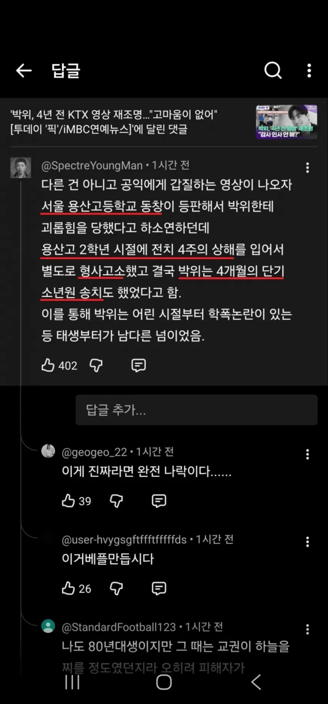
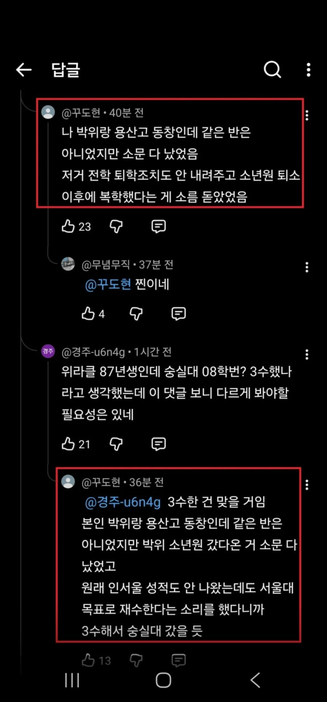
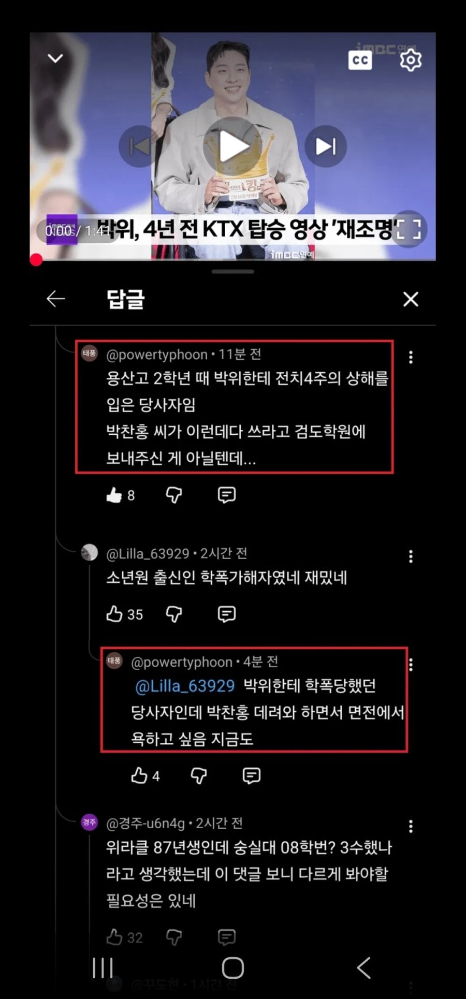
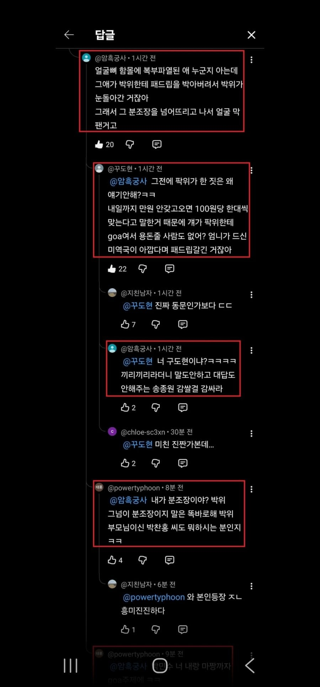

212 · 9 · 13 시간 전 · 원문




수집 당시 댓글 9개
데미소다복숭아 · 2 시간 전
이게 진짜면 그당시 사람패서 소년원 간거면 진짜 존나 팬듯
오렌지병 · 2 시간 전
팝콘 핫딜 없냐
슈퍼앵그리 · 2 시간 전
겐지원쳄 · 1 시간 전
판정승 · 1 시간 전
흙역사기록 · 56 분 전
업보란 과연 있는 것인가
인천빠순이 · 43 분 전
2주에서3주되는거쉽지않음 3주에서4주가는건 정말 쉽지않음
쇼갱 · 32 분 전
송지은 도망쳐
보추암컷타락 · 28 분 전
과연 진실은? 유튜브도 다중이 짓 가능해서 ㅋㅋ


이게 진짜면 그당시 사람패서 소년원 간거면 진짜 존나 팬듯